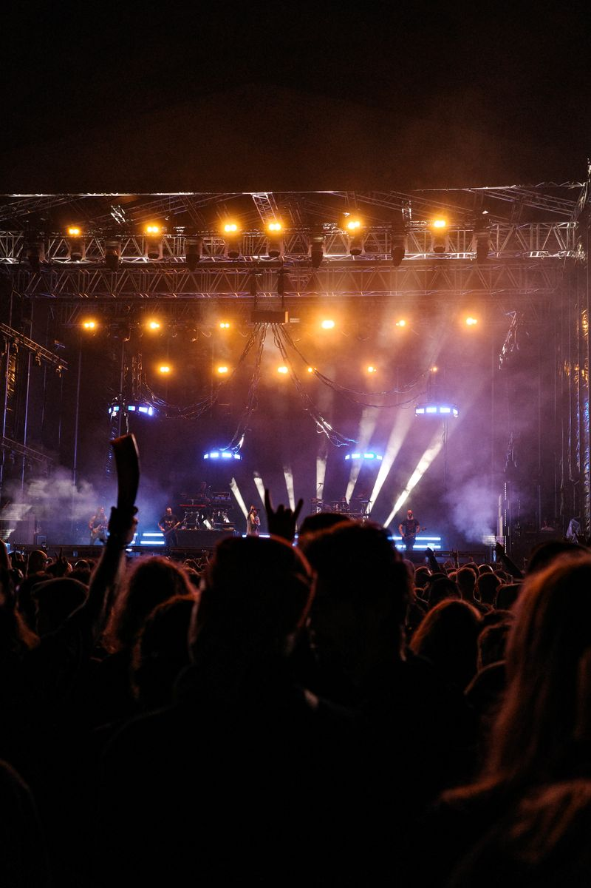
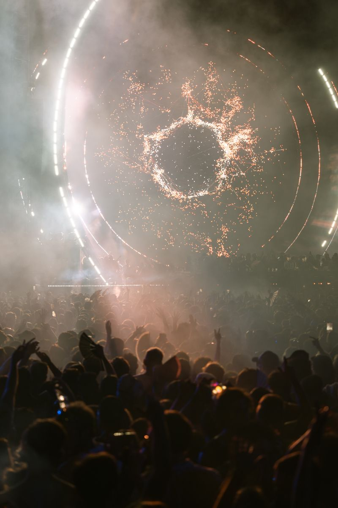

Sets the overall direction for Accord VI and has final say on major decisions.
Sixth edition
Two nights.
One Accord
A two-night celebration of music at Beaconhouse Cantt Campus, Multan. Live Concert on 18 October. Qawwali Night on 19 October.
–
–
–
–
–
–
–
–
One event, two completely different nights

Live Concert

Qawwali Night
One event, two completely different nights
Six years of nights like these.
Real energy from real crowds. Standing in until Accord's own photography replaces these.
 Stock photo
Stock photo
Stock photo Stock photo
Stock photo Stock photo
Stock photoAnd more, once Accord VI happens.
Six years of nights like these.
Real energy from real crowds. Standing in until Accord's own photography replaces these.
Stock photoStock photo
Stock photoStock photoAnd more, once Accord VI happens.
Six editions in
Accord V featured Bayaan live and sold over one thousand tickets.
0Years running
0Live attendees, peak edition
0Instagram reach, peak edition
0Tickets sold at Accord V
Meet our team
The Accord Team.
Names aren't locked in yet. Here's the shape of who's in charge, colour-coded by rank.
Executive Council
Works alongside the President and keeps day-to-day execution on track across every module.
Oversees the directors and module heads, coordinating execution across every team.
Handles internal coordination, documentation, and communication across the committee.
Module Heads & Directors
Nine director seats, plus module heads once this year's modules are finalised.
Members
The rest of the crew that makes both nights run. Roster to come.
Three artists, kept under wraps
A King, a Queen and a Jack. Who are they?
Real artists, hidden behind hints — tap each card to reveal who's actually playing Accord VI.
See the Lineup →The two nights are waiting.
Pick one, or come for both.
The two nights are waiting.
Pick one, or come for both.